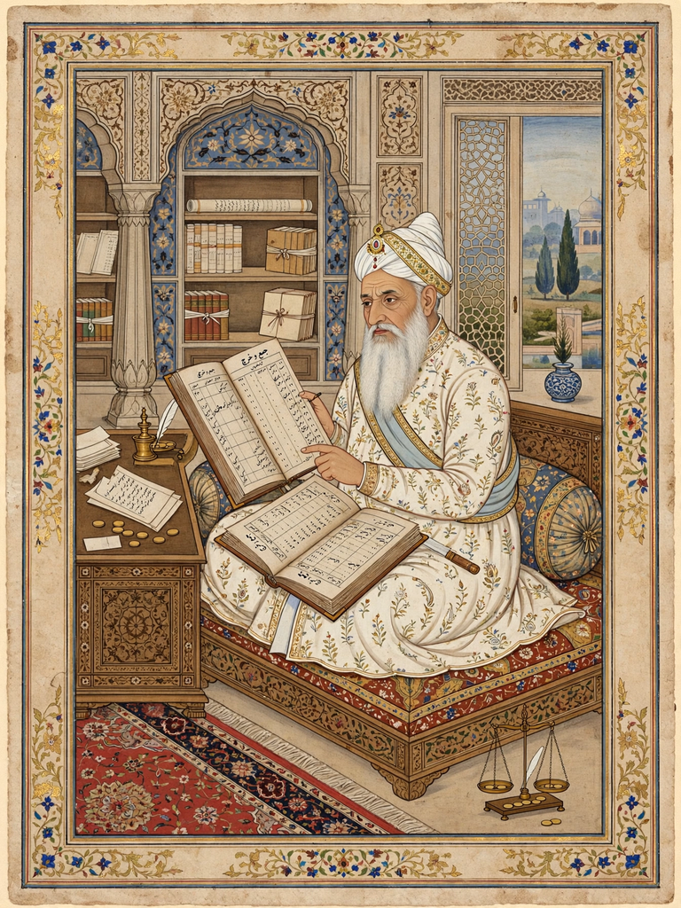

| Raja Todar Mal | |
|---|---|
 | |
| Born | c. 1500 Laharpur, Awadh |
| Died | 8 November 1589 Lahore |
| Occupation | Finance minister (Diwan-i-Ashraf) of Akbar; military commander |
| Known for | The zabt land-revenue system; one of Akbar's Navaratnas |
Raja Todar Mal (c. 1500 – 8 November 1589) was the finance minister of the Mughal emperor Akbar and one of the Navaratnas (nine jewels) of his court. He is best known for the revenue reforms known as the zabt system, which standardised land measurement and assessment across the empire and remained the basis of Indian land revenue for centuries.
Todar Mal, a Khatri Hindu from Laharpur in Awadh, began his career in the service of Sher Shah Suri, whose revenue administration he helped to run. After the Mughal restoration he entered Akbar's service and rose through military and fiscal commands, serving in Gujarat and Bengal.
Appointed finance minister in 1582, Todar Mal systematised the dahsala (ten-year) settlement: land was carefully measured with a standard bamboo jarib joined by iron rings, classified by productivity, and assessed in cash at rates averaged from the yields and prices of the preceding ten years. The state demand was fixed at roughly one-third of the average produce. His regulations — recorded in the Ain-i-Akbari tradition of Abul Fazl — also standardised the rupee coinage and made Persian the language of revenue accounts.
Todar Mal also commanded armies in Bengal and the northwest, and built the town of Todarpur. He died at Lahore in 1589. His reforms were so durable that the British East India Company later modelled parts of its own settlements on them.
Abul Fazl · Birbal · Tansen · Mughal Empire